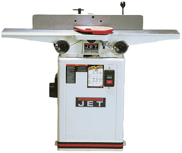
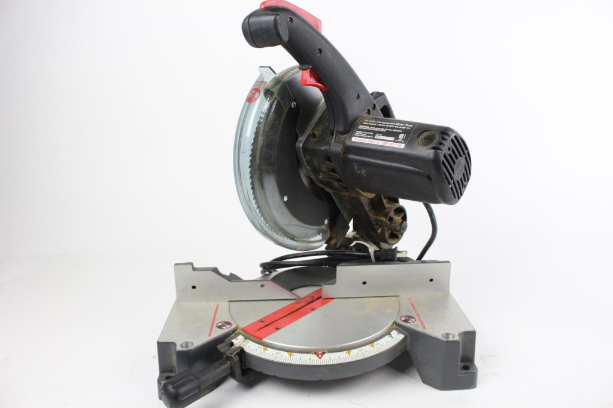
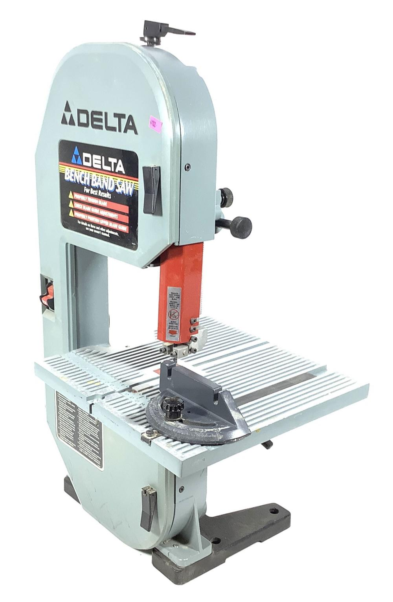
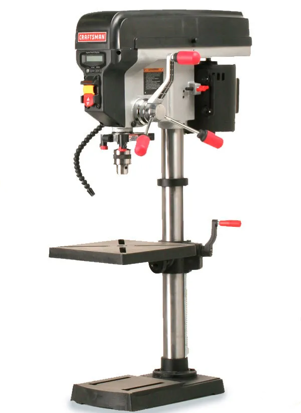

Menu
Here are some of the tools that we have at our disposal. On top of these we also have hand tools such as: chisels, hand planes, saws, palm sanders, and other misc tools.
Craftsman Table Saw Mo:137.248830

Jet JJ-6SCXW Jointer
Craftsman Miter Saw Mo:315.212100
Bauer Trim Router

Delta Benchtop Bandsaw
Craftsman Drill Press Mo:21914
Miller 140 Mig Welder